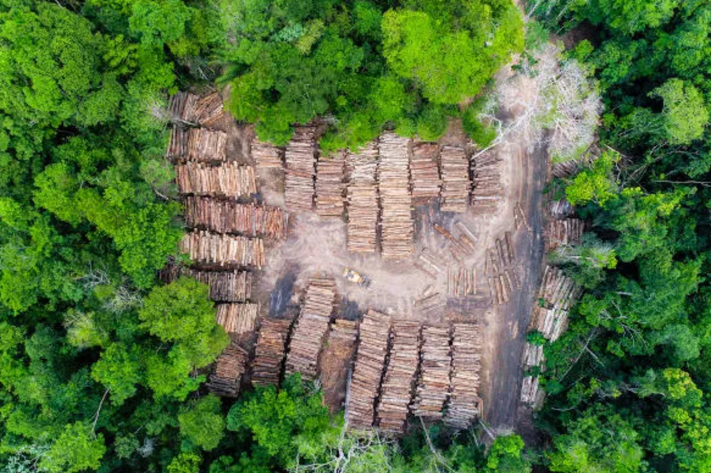

Oque são?
Um veículo autônomo está no fato de que ele não precisa de um condutor que mova, assim funcionando sozinho e sem ajuda de ninguém.
- A história do carro autônomo surgiu a 10 anos em 2010, com o seu primeiro protótipo feito pelo Google assim começando as principais ideias de Veículos Autônomos. 
- 2010: Primeiro protótipo de um veículo autônomo.
- Muitas empresas viram e começaram a criar protótipos ou ideias de Veículos como:
- Mineração: A mineração em larga escala, especialmente a mineração ilegal, tem impactos devastadores nas florestas.
- Infraestrutura: A construção de estradas, barragens e outros projetos de infraestrutura causa o desmatamento.
- Desenvolvimento urbano: O crescimento desordenado das cidades leva à destruição de áreas florestais.